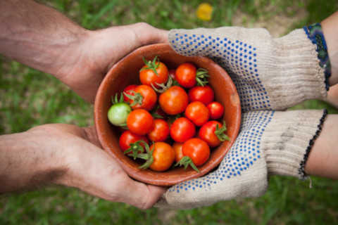

Curso de Agricultura Orgânica:

Princípios Básicos da Agricultura Orgânica:
Definição e fundamentos da agricultura orgânica.
Princípios como a saúde do solo, biodiversidade, e respeito ao equilíbrio ecológico.
Manejo do Solo em Agricultura Orgânica:
Técnicas de cultivo sem uso de produtos químicos sintéticos.
Compostagem e adubação orgânica.
Rotação de culturas.
Controle de Pragas e Doenças:
Métodos de controle biológico.
Uso de plantas repelentes e atrativas.
Estratégias para prevenir e lidar com pragas e doenças.
Sistemas de Produção Orgânica:
Agricultura orgânica em diferentes escalas: horticultura, fruticultura, agricultura de campo.
Sistemas agroflorestais.
Certificação Orgânica:
Processo de certificação orgânica.
Padrões e regulamentações.
Adaptação de Técnicas Tradicionais:
Incorporação de métodos tradicionais na agricultura orgânica.
Agricultura biodinâmica.
Compostagem e Fertilizantes Orgânicos:
Elaboração de compostos orgânicos.
Utilização de fertilizantes naturais.
Manejo da Água em Agricultura Orgânica:
Práticas de conservação de água.
Sistemas de irrigação eficientes.
A Agricultura Orgânica e o Mercado:
Tendências do mercado para produtos orgânicos.
Certificação e marketing.
Sustentabilidade e Agricultura Orgânica:
Impacto ambiental positivo da agricultura orgânica.
Contribuição para a saúde do ecossistema.
Desafios e Soluções na Agricultura Orgânica:
Desafios enfrentados na transição para práticas orgânicas.
Soluções para questões comuns.
Casos de Sucesso e Exemplos Práticos:
Estudos de caso de fazendas orgânicas bem-sucedidas.
Exemplos de comunidades agrícolas sustentáveis.
Recursos para Estudos Adicionais:
Livros, artigos e pesquisas relevantes.
Organizações e associações relacionadas à agricultura orgânica.